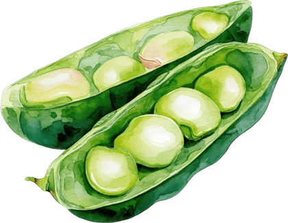
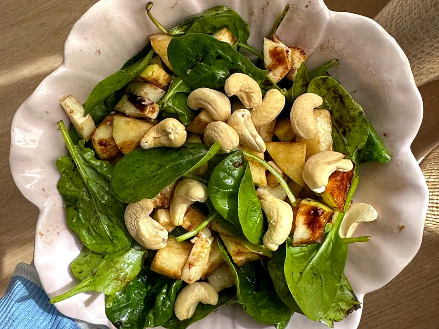
EspecialidadPrograma digestivo
Para SIBO, colon irritable, distensión, gases, estreñimiento o reflujo.
- Primera consulta de valoración completa
- Diario de síntomas y pautas progresivas
- Reintroducción ordenada de alimentos
Si llevas tiempo quitando alimentos, con síntomas que no se van o con dudas sobre qué comer durante un tratamiento, aquí encontrarás tiempo, escucha y un plan que te enseña a hacerlo por tu cuenta. Sin dietas restrictivas, sin culpa y sin pasarte por la báscula en cada consulta.
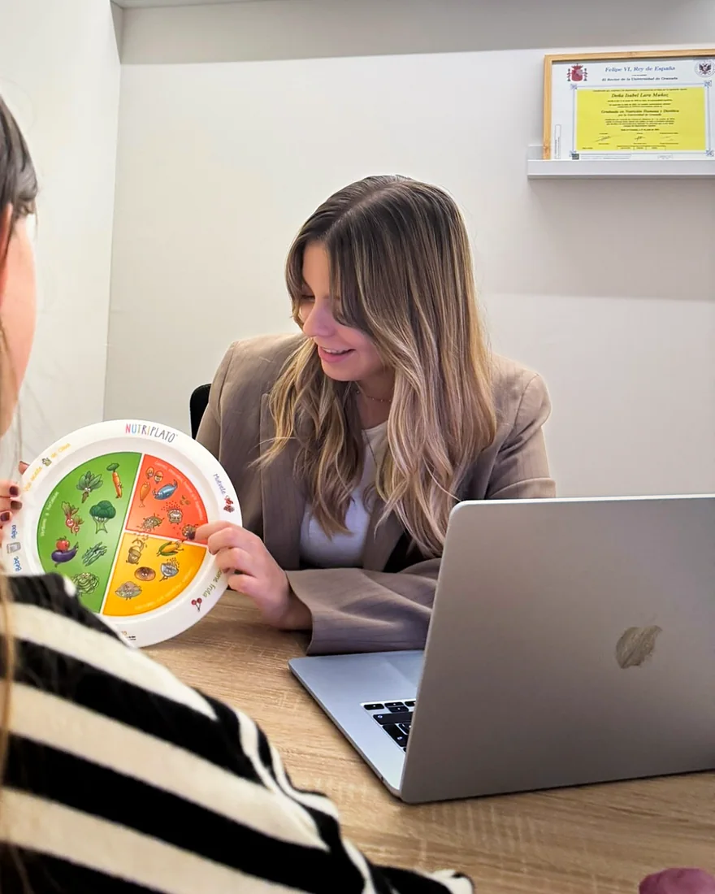
Si te reconoces en alguna de estas situaciones, hay otra forma de hacerlo: con un plan, con calma y sin comer cada vez menos.

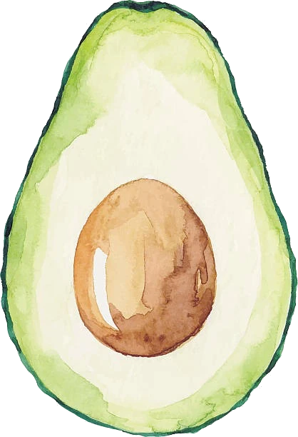
Estudié Farmacia en la Universidad de Granada y, durante la carrera, me di cuenta de que esa forma de entender la salud no era la mía. Aun así la terminé, y después estudié Nutrición Humana y Dietética. Me especialicé en patología digestiva y nutrición oncológica.
Al volver a Jaén trabajé en una farmacia. Allí atendí a muchísimas personas con problemas digestivos que habían probado de todo, y vi que lo que necesitaban era tiempo, escucha y alguien que les explicara qué les pasaba, no otro producto.
Por eso nació El Plato Lleno: una consulta sanitaria, cercana y educativa. Como farmacéutica, además, tengo en cuenta cómo se relacionan tus medicamentos, los suplementos y lo que comes.
El objetivo es que termines sabiendo elaborar tu propio menú y qué hacer si los síntomas vuelven.
Conozco tu caso con calma: síntomas, historia clínica, medicación, hábitos y tu relación con la comida.
Te envío tus pautas personalizadas y tu menú para dos semanas, y empezamos con el diario de síntomas y pautas progresivas, en lugar de quitar alimentos a ciegas.
Revisamos cómo vas, ajustamos objetivos y trabajamos una herramienta nueva en cada sesión.
Alta planificada cuando ya organizas tu alimentación por tu cuenta, con revisiones opcionales si las necesitas.
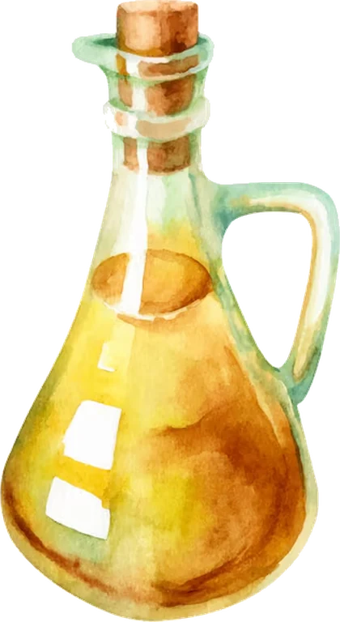


EspecialidadPara SIBO, colon irritable, distensión, gases, estreñimiento o reflujo.
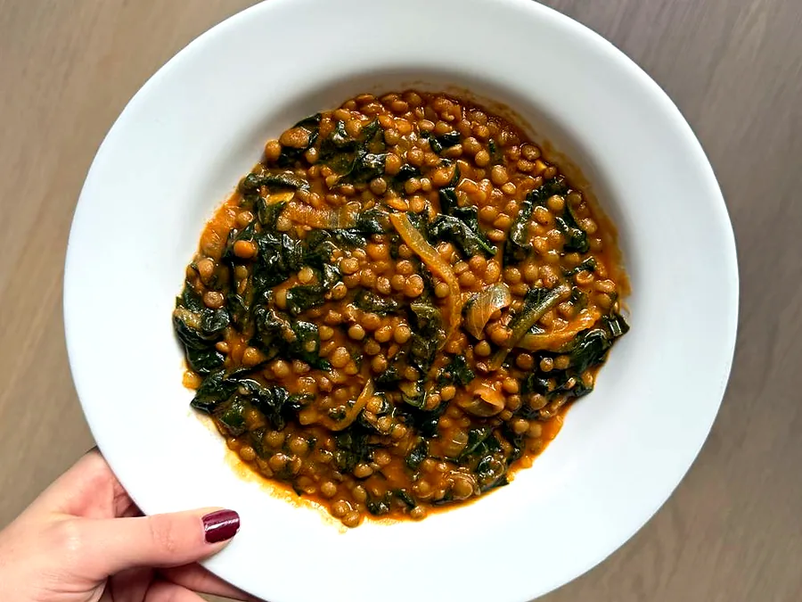
AcompañamientoAntes, durante y después del tratamiento, para ti y para tu familia.
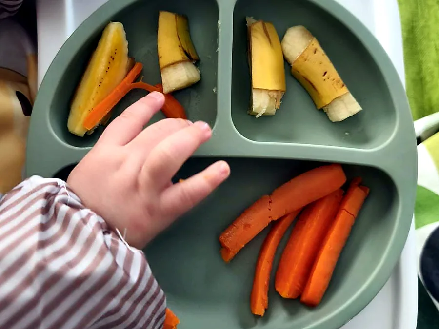
FamiliasPara empezar con los sólidos de tu peque con información actualizada y sin agobios.
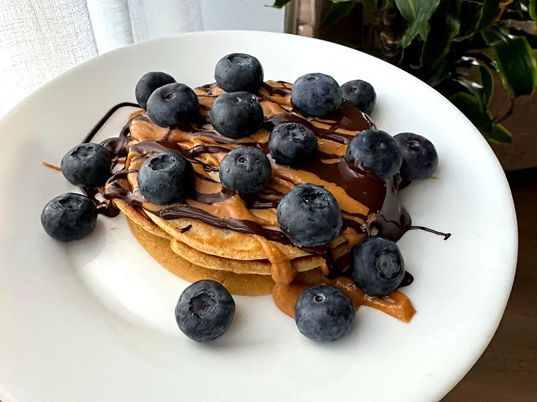
ComplementarioMejorar tu alimentación sin centrarlo todo en el peso.
Online por videollamada, estés donde estésPresencial en Paseo de la Estación, 23, Entreplanta C (Jaén)
Los bonos te permiten seguir un proceso completo a mejor precio que las consultas sueltas.
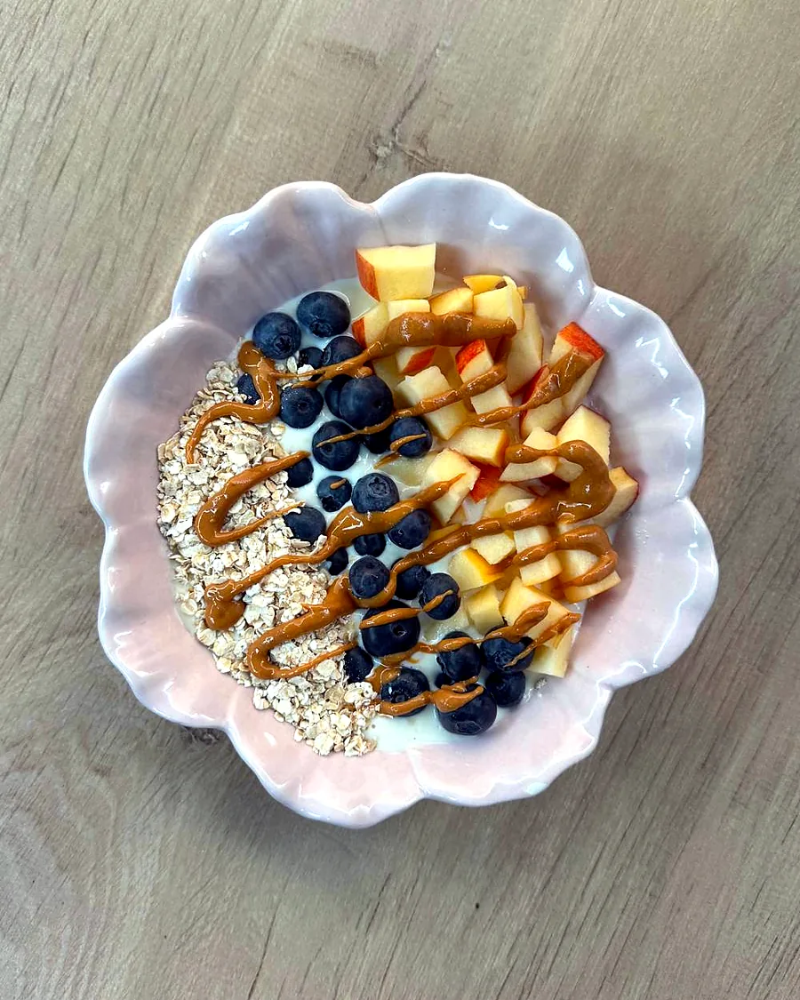
Para empezar con buen piePrimera consulta + 3 seguimientos
180 €4 sesiones · 45 € cada una
Para cualquiera que quiera empezar acompañado de principio a fin.
Reservar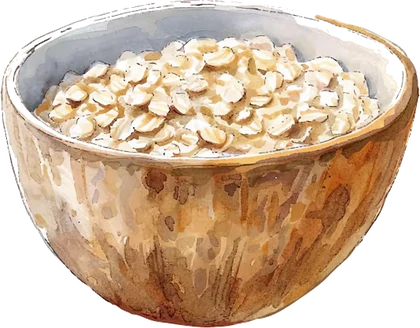
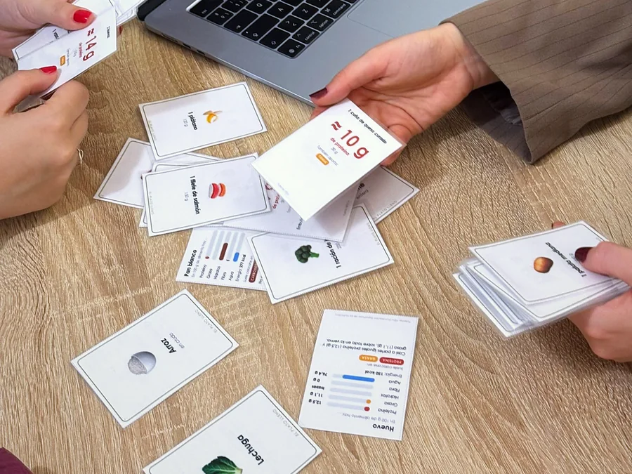
Tu minicurso de nutrición¿Te interesa la nutrición pero cada día lees una cosa distinta? Esto es lo más parecido a un minicurso, a tu ritmo, resolviendo tus dudas y con materiales prácticos.
400 €10 sesiones · 40 € cada una
La opción perfecta si quieres llegar a la cena de Navidad con argumentos… y no pelearte con el cuñado de turno.
ReservarPreparo charlas y talleres prácticos, adaptados a cada público, para empresas, colegios y AMPAS, asociaciones, gimnasios, farmacias y centros de salud.
Presenciales en Jaén y provincia, u online. Cuéntame qué necesitas y lo preparamos a medida.
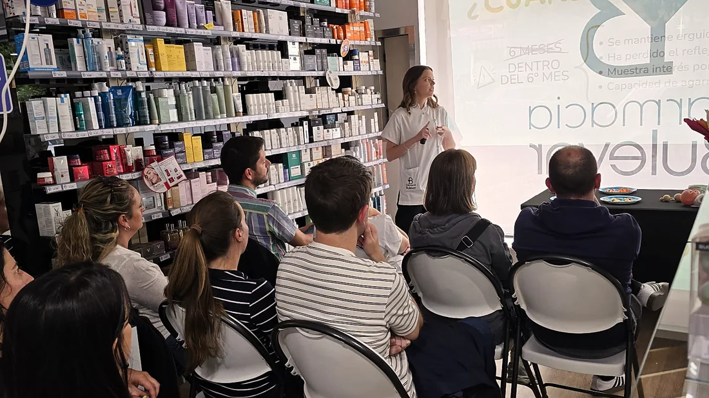
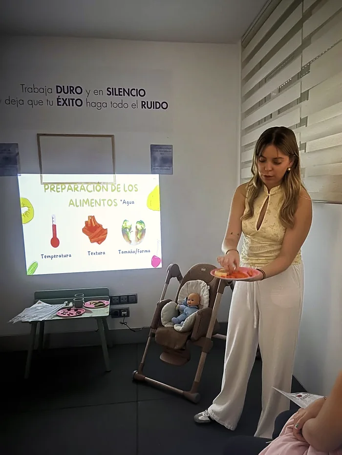
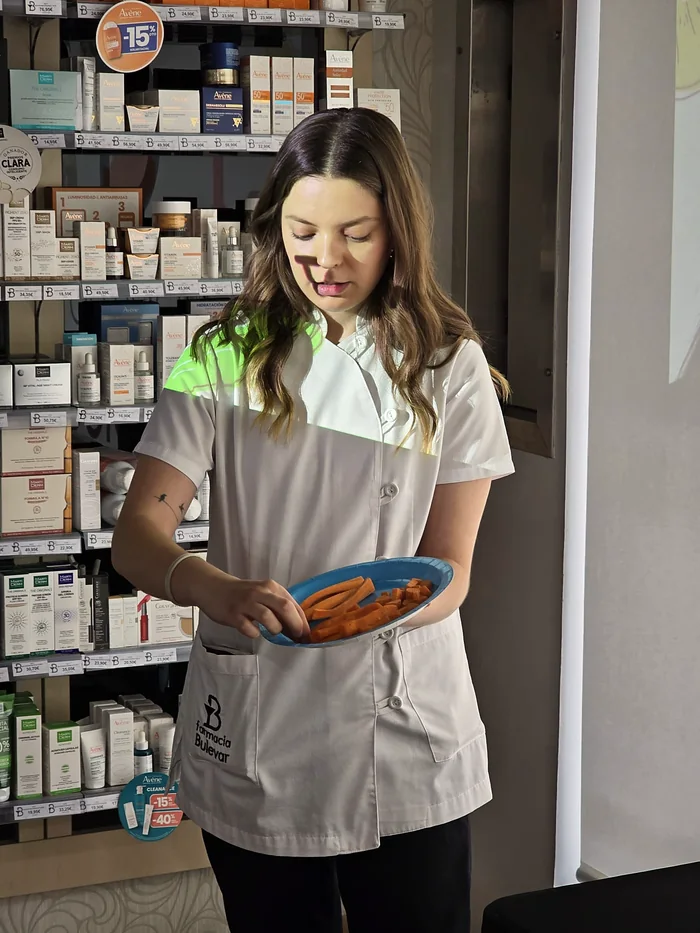
«Excelente profesional, muy cercana, amable y atenta. Me ha ayudado mucho con mi patología digestiva, ofreciendo pautas nutricionales personalizadas y explicando todo de forma clara y sencilla. […] Me he sentido escuchado y acompañado en todo momento.»
«No sólo nos ha enseñado a diseñar un menú conjunto teniendo en cuenta nuestras necesidades como individuos, sino que todas las recetas propuestas han sido fáciles y riquísimas. Se la recomiendo a todo el mundo, de verdad.»
«Estupenda profesional y persona. No solo se centra en que haga dieta sino en que adquiera buenos hábitos y aprenda lo que estoy comiendo. […] La recomiendo 100%»
«Hacer el taller de BLW con Isabel ha sido una tranquilidad enorme para nuestra familia. Explica todo de forma muy clara y práctica, especialmente cómo cortar y ofrecer los alimentos según la edad del bebé.»
«Isabel me lo explicó todo con mucha calma y llegamos a un menú en el que apenas he cambiado mis hábitos, pero son comidas mucho más completas. Además no solo te da un menú, sino que aprendes mucho con sus explicaciones.»
«Una de las mejores profesionales que he conocido. Dedicación y amor a su trabajo.»
«Nos lo explicó todo muy claro y nos dio un material súper útil. Todo totalmente actualizado. […] Muy contentos de que haya nutricionistas así en Jaén.»
«Gran profesional con empatía y amabilidad. Tratamiento detallado. Muy recomendable»
En @el_plato_lleno comparto consejos prácticos, desmonto bulos sobre alimentación, hablo de salud digestiva y, de vez en cuando, alguna idea de plato sencillo y sin alimentos prohibidos.
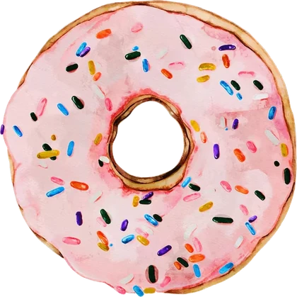
Si tu duda no está aquí, escríbeme y te respondo yo.
Dura aproximadamente una hora. Hacemos una entrevista completa sobre tus hábitos, estilo de vida, actividad física, gustos, objetivos y posibles patologías. Si vienes por un problema digestivo, también repasamos tus síntomas, tu medicación y las pruebas que te hayan hecho.
En un máximo de 3 días te envío todo lo que necesitas para empezar: tus pautas personalizadas, tu menú para dos semanas explicado paso a paso y la guía fotográfica de raciones con medidas caseras.
Si tienes analíticas recientes, informes médicos o el listado de la medicación y los suplementos que tomas, tráelos o envíamelos antes. Me ayudan a valorar tu caso desde el primer día. Si no tienes nada, no pasa nada: empezamos igual.
Duran unos 30 minutos. Revisamos tus avances, resolvemos dudas, trabajamos lo que te cueste y ajustamos los objetivos. Después de cada una recibes un menú nuevo para dos semanas y las herramientas de lo que estemos trabajando.
Al principio son cada 2 o 2 semanas y media. Cuando los hábitos se van consolidando, se espacian a una al mes o según lo que necesites.
No, pesarte no forma parte de mis consultas. La báscula solo aparece en casos muy concretos en los que de verdad aporta algo a tu salud, y siempre lo hablamos antes: si no quieres, no se usa.
Tu progreso lo medimos de otra forma: cómo te encuentras, tus síntomas, tu energía, tus hábitos y tu relación con la comida. Eso dice mucho más que un número.
No sin un motivo claro. En problemas digestivos a veces hace falta retirar algunos alimentos durante un tiempo, pero siempre con una pauta ordenada y con un plan para volver a introducirlos. El objetivo es que comas lo más variado posible.
Sí. Las consultas online son por Google Meet y funcionan igual que las presenciales. Recibirás el enlace en cuanto se confirme la cita.
El pago se hace por adelantado, de la sesión o del bono. Antes de la primera consulta también te enviaré un formulario para firmar el consentimiento de protección de datos. La cita queda confirmada cuando recibo el pago y el formulario.
Puedes cancelar o cambiar la cita avisando con al menos 24 horas de antelación. Si avisas más tarde o no vienes, te envío por correo el material preparado para esa sesión. Si llegas con retraso, hay un margen de cortesía de 10 a 15 minutos. Las situaciones excepcionales las valoramos en cada caso.
No necesitas derivación: puedes pedir cita directamente. La consulta de nutrición no está cubierta por la sanidad pública. Si estás en tratamiento, tráeme tus informes y tendré en cuenta tu medicación y las indicaciones de tu médico.
Sí. Puede venir contigo quien tú quieras, siempre que sea alguien que te aporte y te motive. A veces ayuda mucho, sobre todo si quien cocina en casa es otra persona.
Eso sí: si crees que va a cuestionarte, incomodarte o que no vas a poder hablar con libertad delante de esa persona, mejor que te espere fuera. Tenemos una sala de espera estupenda.
Elige día y hora directamente en mi calendario de Doctoralia. Recibirás la confirmación por correo.
Escríbeme por WhatsApp, por correo o por Instagram. Te respondo personalmente.
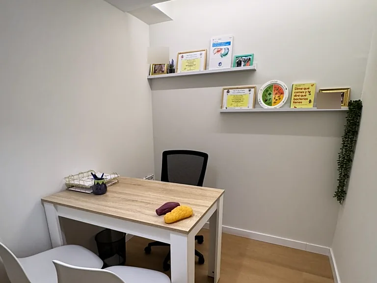